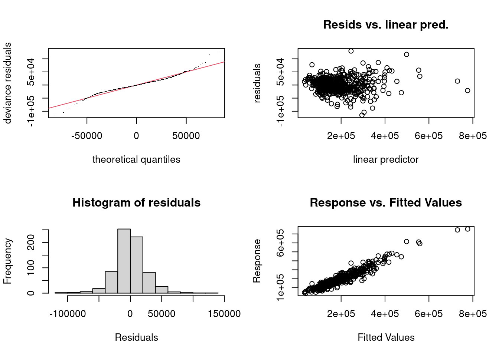

2.4 Final Model
2.4.1 Prediction on Test Dataset
# build final model
ames_final_model <- gam(Sale_Price~ Garage_Type_BuiltIn + Garage_Type_Detchd + Garage_Type_No_Garage + Neighborhood_College_Creek + Neighborhood_Old_Town + Neighborhood_Edwards + Neighborhood_Somerset + Neighborhood_Northridge_Heights +
Neighborhood_Gilbert + Neighborhood_Sawyer + MS_SubClass_One_and_Half_Story_Finished_All_Ages +
MS_SubClass_Two_Story_1946_and_Newer + MS_SubClass_Duplex_All_Styles_and_Ages +
MS_SubClass_One_Story_PUD_1946_and_Newer + Garage_Cars +
Overall_Qual + s(TotRms_AbvGrd) + s(Lot_Frontage) + s(Year_Built) +
s(Open_Porch_SF) + s(Second_Flr_SF) + s(Garage_Area) + s(Gr_Liv_Area) +
s(First_Flr_SF) + s(Lot_Area),data=ames_baked_train)
ames_final_model_preds<- predict(object = ames_final_model, newdata = ames_baked_test, type = "response") # obtain predictions
sqrt(mean((ames_final_model_preds- ames_baked_test$Sale_Price)^2)) # calculate test set RMSE## [1] 195576.6Using the formula provided from training, we tried to fit the GAM model. The RMSE of the final model is 195576.6, compared to 70421.17 previously. Obviously, this is not ideal, since now the RMSE is more than two times higher. Why?
plot(ames_final_model, residuals=TRUE,shade = TRUE, shade.col = "lightblue",pch = 1, cex = 0.5,pages = 1)Here we have the residual plot of those variables that had applied splines function, and the blue shades represent the 95% confidence interval.
From the graphs for Gr_Liv_Area and Lot_Area, we could see that the tails are drawn to the noises, letting it change the slope, which should not be happening.
In order to create a well-fit final model, we have to recognize what is wrong with out current model.
First, let’s look at the several plots gam.check had produced.
set.seed(1293)
gam.check(ames_final_model)
##
## Method: GCV Optimizer: magic
## Smoothing parameter selection converged after 26 iterations.
## The RMS GCV score gradient at convergence was 17.03165 .
## The Hessian was positive definite.
## Model rank = 98 / 98
##
## Basis dimension (k) checking results. Low p-value (k-index<1) may
## indicate that k is too low, especially if edf is close to k'.
##
## k' edf k-index p-value
## s(TotRms_AbvGrd) 9.00 1.00 1.05 0.865
## s(Lot_Frontage) 9.00 1.00 0.97 0.200
## s(Year_Built) 9.00 3.94 0.92 0.015 *
## s(Open_Porch_SF) 9.00 1.00 0.91 <2e-16 ***
## s(Second_Flr_SF) 9.00 1.00 0.95 0.085 .
## s(Garage_Area) 9.00 3.62 0.98 0.295
## s(Gr_Liv_Area) 9.00 9.00 1.00 0.560
## s(First_Flr_SF) 9.00 6.48 1.09 0.970
## s(Lot_Area) 9.00 7.81 1.05 0.930
## ---
## Signif. codes: 0 '***' 0.001 '**' 0.01 '*' 0.05 '.' 0.1 ' ' 1From the Q-Q plot, we could see that there is a clear trend to the residuals; from the residual values plot, we could see that there’s a cluster of points, and maybe a negative slope; from the histogram, we could see that there is a bell-shaped curve; and from the response vs. fitted values plot, we could see that the values are fitted pretty good.
We should also look at the table generated from gam.check.
The table shows the k value, effective degrees of freedom, test statistics, and p-value of each basis functions.
The k value is very similar to the “knots” in MARS, representing how many basis function is used to fit the model, and could be used as the smoothing parameter.
Another smoothing parameter we would use is λ, since \(FIT=Likelihood-λ*Wiggliness\) is how the fit of GAM model is calculated.
The likelihood represents how well the model captures patterns in the data, and wiggliness represents the complexity of the model.
As described in the model, when the p-value is too low, or if the k-index is below 1, it’s possible that we need to increase the size of the basis function.
In the table above, we could see that Year_Built, Open_porch_SF, and Second_Flr_SF all had p-values below 0.1.
# build final model
ames_final_model2 <- gam(Sale_Price~Garage_Type_BuiltIn + Garage_Type_Detchd + Garage_Type_No_Garage + Neighborhood_College_Creek + Neighborhood_Old_Town + Neighborhood_Edwards + Neighborhood_Somerset + Neighborhood_Northridge_Heights + Neighborhood_Gilbert + Neighborhood_Sawyer + MS_SubClass_One_and_Half_Story_Finished_All_Ages + MS_SubClass_Two_Story_1946_and_Newer + MS_SubClass_Duplex_All_Styles_and_Ages +
MS_SubClass_One_Story_PUD_1946_and_Newer + s(Garage_Cars,sp=0.1,k=2) + s(Overall_Qual,k=3) + s(TotRms_AbvGrd,sp=0.01,k=11) + s(Lot_Frontage,sp=0.1,k=7) +s(Year_Built,sp=0.0001,k=29) + s(Open_Porch_SF,sp=0.6,k=9) + s(Second_Flr_SF,sp=0.9,k=7) + s(Garage_Area,sp=1,k=5) + s(Gr_Liv_Area,sp=10,k=6) + s(First_Flr_SF,sp=0.001,k=3) + s(Lot_Area,sp=1,k=3) ,data=ames_baked_train) ## Warning in smooth.construct.tp.smooth.spec(object, dk$data, dk$knots): basis dimension, k, increased to minimum possibleAfter seeing where the problem was, we started using the smoothing parameter to tune the variables.
From the formula \(FIT=Likelihood-λ*Wiggliness\), we know that, the more wiggly (complex) we want the variable to fit, the smaller λ needs to be (between 0 and 1), and if we want the fit to be less wiggly, λ has to be bigger than 1.
plot(ames_final_model,select=c(7), residuals=TRUE,shade = TRUE, shade.col = "lightblue")For example, above is the plot from the first model of the variable Gr_Liv_Area.
We can see that, when the above ground living area was increasing, the trend of the price goes up when there are more data, and when there is less data, the price started dramatically.
This disobeys the common sense, since the bigger the house is, the more expensive the house should be.
plot(ames_final_model2,select=c(9), residuals=TRUE,shade = TRUE, shade.col = "lightblue")This is the reason why we need to use λ and tune the variable.
For the second model, we chose a λ of 10, which means that we don’t want the trend to be wiggly, and it should be as simple as possible, which also prevents the line of best fit to be drawn by the noises.
As we can see from the graph above, the price is now predicted to increase with the above ground area.
set.seed(12984)
gam.check(ames_final_model2)##
## Method: GCV Optimizer: magic
## Smoothing parameter selection converged after 8 iterations.
## The RMS GCV score gradient at convergence was 3093.98 .
## The Hessian was positive definite.
## Model rank = 90 / 90
##
## Basis dimension (k) checking results. Low p-value (k-index<1) may
## indicate that k is too low, especially if edf is close to k'.
##
## k' edf k-index p-value
## s(Garage_Cars) 2.00 1.81 1.03 0.77
## s(Overall_Qual) 2.00 1.95 1.04 0.91
## s(TotRms_AbvGrd) 10.00 6.24 0.99 0.30
## s(Lot_Frontage) 6.00 3.43 0.98 0.28
## s(Year_Built) 28.00 25.78 0.95 0.12
## s(Open_Porch_SF) 8.00 2.53 0.97 0.18
## s(Second_Flr_SF) 6.00 2.46 0.98 0.23
## s(Garage_Area) 4.00 1.80 1.00 0.48
## s(Gr_Liv_Area) 5.00 1.08 0.97 0.20
## s(First_Flr_SF) 2.00 1.97 1.00 0.47
## s(Lot_Area) 2.00 1.03 1.02 0.74After tuning, we can see that now the basis dimension for all variables have p-values of bigger than 0.1.
ames_final_model_preds2<- predict(object = ames_final_model2, newdata = ames_baked_test, type = "response") # obtain predictions
sqrt(mean((ames_final_model_preds2- ames_baked_test$Sale_Price)^2)) # calculate test set RMSE## [1] 28781.85Here, we can also see that the RMSE value had decreased to 28781.85, compared to 195576.6 from the first model.